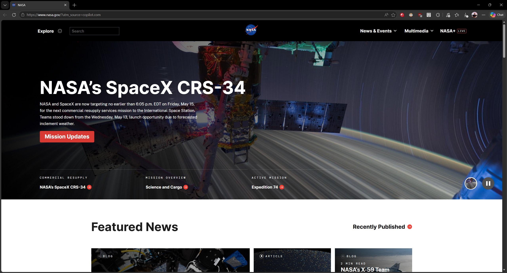
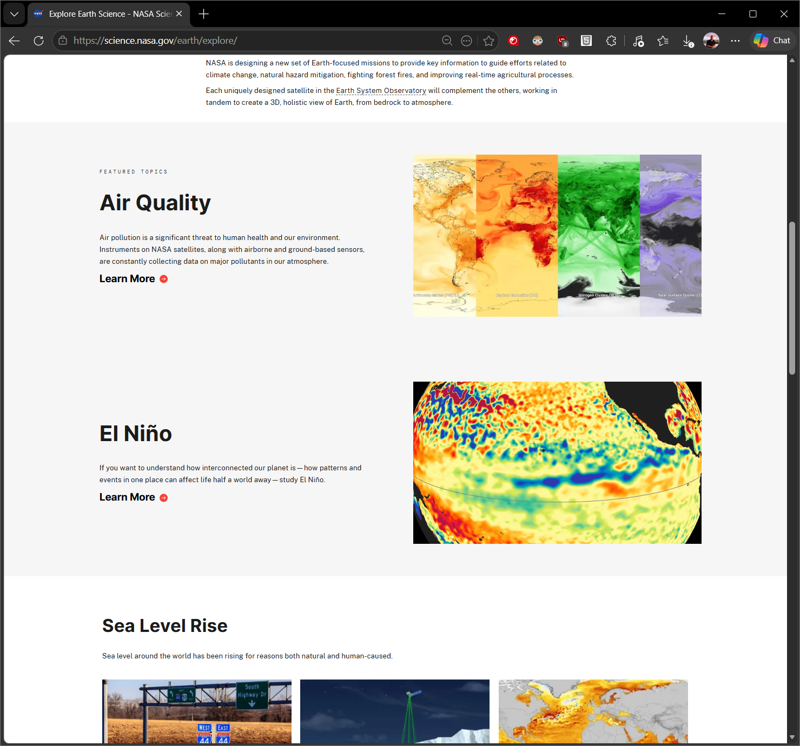
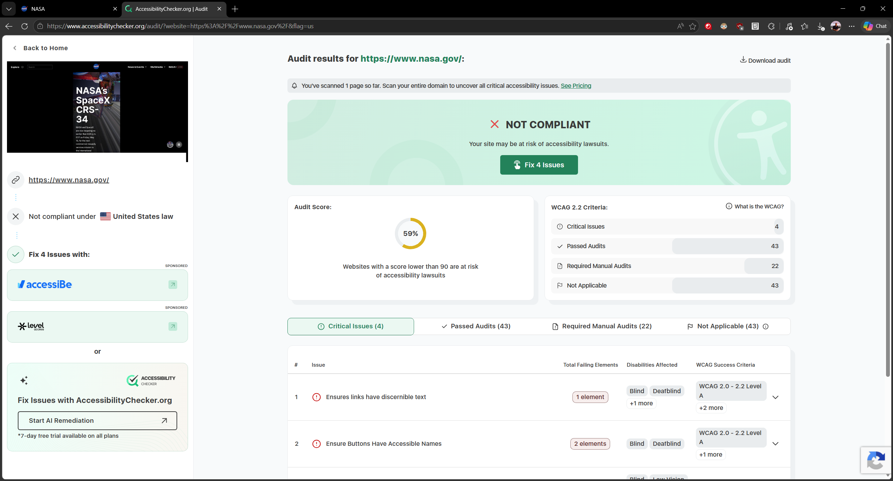

1. Website URL
The website I evaluated is NASA’s official site: https://www.nasa.gov/.
2. Website Name
The name of the website is simply NASA.
3. Target Audience
NASA’s website is designed for the general public, especially people interested in the U.S. space program, scientific discoveries, missions, and space exploration.
4. How the Site Is Organized
-The homepage begins with the most recent news stories at the top. Below that, the site highlights upcoming events and major mission accomplishments. The layout feels intentional and flows from “breaking news” to “ongoing missions” to “featured achievements.”
-NASA uses two pop‑out menus: one for searching the entire site and another for navigating categories such as Missions, Humans in Space, Earth, The Solar System, and The Universe. Each page includes large, high‑quality images and clearly adapts to different screen sizes using responsive design.

5. CRAP Design Principles
NASA uses several CRAP design principles effectively. One strong example of repetition is the consistent heading structure across subpages. Many pages begin with a striking image followed by the question “Why does NASA do ___?” which helps guide the reader through the content.
The site also uses contrast well. Alternating white and light‑gray background sections help separate topics and make the reading experience more comfortable.

6. Accessibility Audit Score
According to the accessibility checker, NASA’s website scores a 59%. This is somewhat surprising for such a large organization, but not entirely unexpected for a government site.
Critical issues include:
- Links missing discernible text
- Buttons missing accessible names
- Missing or improperly structured level‑one headings

7. Site Effectiveness
NASA’s website is highly effective for exploration. It encourages users to browse, discover missions, and learn about space. I did not encounter any issues completing tasks or finding information. On desktop, however, the layout leaves a lot of whitespace around the content areas.
8. Site Efficiency
The site is efficient and easy to navigate. The search bar makes finding information quick, and most pages include images and readable text that help users understand content faster.
9. Engagement
The website is visually engaging and enjoyable to use. I found myself exploring missions and topics I didn’t even know existed. The combination of visuals and storytelling keeps users interested.
10. Recommendations for Improvement
I have two recommendations for improving NASA’s website. First, the homepage could be more welcoming for first‑time visitors. If someone doesn’t notice the Explore dropdown in the top‑left corner, they may not understand how to navigate the site.
Second, the Explore menu should include a clear “Return to Home” button. Currently, the only way back is by clicking the NASA logo, which is not obvious to all users.